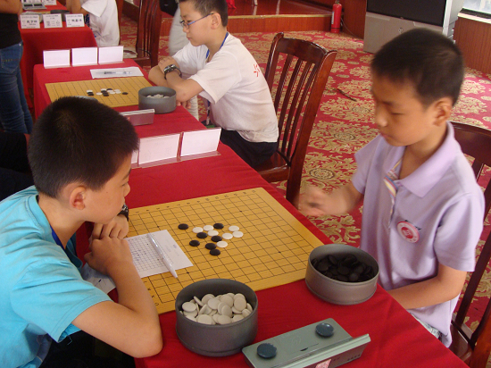

2011年全少赛特色——骗骗骗
#1 2011年全少赛特色——骗骗骗 作者：黄药师 发表时间：2011-7-31 15:47:36
前言
某轮结束，乘坐电梯时，遇到某对若干选手在聊天，其中甲对乙说：你怎么一上来就把骗都用光了，害得我都不好用了。乙说：那你就和他们拼计算力呗……
在本次全少赛排行第一的骗招应该是金星开局的流浪者的梦。（儿童组使用率较高）
=======上图对应的爱五子棋谱代码如下，以便你拆解：========
h8h9f8i8g9g10f11h10i10h7g7j9g6j8
======================================================

此开局适合对手对金星定式一知半解的情况下使用。此开局宁波和石家庄小朋友使用率很高。如上图为最后一轮宁波张建业VS南通黄英男。
但也有被反利用的，开瑞星，算好对手必定转成金星流浪者的梦，然后速度秒杀之。比如南通的郭钒逸同学就成功金星执黑秒杀一名对手。
排第二的应该是岚月的立二了（少年组出现的几率很高）
=======上图对应的爱五子棋谱代码如下，以便你拆解：========
h8i7i10i6
======================================================
当时开赛才5分钟，我还在比赛场地，看到蒋哲宇同学的这个打点，差点吐血。不管后面怎么下，这个白4的二打重点介绍过，几乎所有一起训练的同学都会，他居然打成这个点，难道真是一路火车给颠晕了。白六只要下面这样下，黑棋就无防了，事实上，师晓林也是这么下的。
=======上图对应的爱五子棋谱代码如下，以便你拆解：========
h8i7i10i6i9g7
======================================================
然后就是斜月的一白4的变化，具体因为没有细看，不是很清楚，后来听朱建峰老师介绍了一下，也没有记住。谁清楚这一路有什么变化介绍一下。
=======上图对应的爱五子棋谱代码如下，以便你拆解：========
h8i7g9j7
======================================================
依稀记得是宁波孙嘉弘VS安徽陈自然中出现过。

上图是 北京 陈旭vs 南通 张伟进。
接着就是浦月了。
如果我没有记错的话，金洪俐就是在这里悲剧的。
最后一轮，金同学vs徐嘉琦，金同学开局，流星，应该是有准备的，看他信心满满的样子。
=======上图对应的爱五子棋谱代码如下，以便你拆解：========
h8i7j10
======================================================
接着就看到，徐嘉琦同学的白4——变浦月了。
=======上图对应的爱五子棋谱代码如下，以便你拆解：========
h8i7j10h9
======================================================
我心中就一震，金同学要糟糕，因为之前秦皇岛的选手先后2次对我们的选手开过浦月，我们的选手都没有攻出来，和棋结束，金同学能杀出来吗？
如上图，注意看金同学的表情。
结果大家都知道了，金同学在他最后一次参加的全少赛中获得了亚军。
其他还有一些，估计也是有骗的。
比如首轮儿童女子组的陆梦溪vs郑逸宁，郑逸宁开局寒星，我看就感觉不好，为小陆同学捏把汗，这里肯定有东西。结果估计是小郑同学自
#2 Re:2011年全少赛特色——骗骗骗 作者：梧桐风 发表时间：2011-7-31 16:23:23
 金小盆友的表情有点轻敌噢~大忌~
金小盆友的表情有点轻敌噢~大忌~
#3 Re:2011年全少赛特色——骗骗骗 作者：自来水 发表时间：2011-7-31 16:42:06
 我年轻两岁就好了
我年轻两岁就好了
#4 Re:Re:2011年全少赛特色——骗骗骗 作者：梧桐风 发表时间：2011-7-31 16:49:44
引用：浙江欢迎您
原文由 自来水 发表于 2011-7-31 16:42:06 :
#5 Re:2011年全少赛特色——骗骗骗 作者：离子阵阵雨 发表时间：2011-7-31 17:22:16
为啥不讲讲我的棋- 。。。。-，-#6 Re:2011年全少赛特色——骗骗骗 作者：隐藏菜系 发表时间：2011-7-31 18:05:52
楼上，你自己发啊，等你棋评呢#7 Re:Re:2011年全少赛特色——骗骗骗 作者：黄药师 发表时间：2011-7-31 19:56:50
引用：开赛15分钟以后我就被逐出赛场，哪能看那么多啊！
原文由 离子阵阵雨 发表于 2011-7-31 17:22:16 :
为啥不讲讲我的棋- 。。。。-，-
#8 Re:2011年全少赛特色——骗骗骗 作者：梧桐风 发表时间：2011-7-31 21:14:06
药师你的学生们应该向阵雨小盆友学习---注册论坛ID
［ 掌棋宣传员 于 2011-7-31 22:15:55 时花20金币送鲜花一朵］
#9 Re:Re:2011年全少赛特色——骗骗骗 作者：黄药师 发表时间：2011-7-31 21:38:55
引用：其实他们早注册了，有的我知道，有的我不知道！他们基本不说话，只看！
原文由 梧桐风 发表于 2011-7-31 21:14:06 :药师你的学生们应该向阵雨小盆友学习---注册论坛ID
［ 掌棋宣传员 于 2011-7-31 22:15:45 时花20金币送鲜花一朵］
［ 微微一笑 于 2011-8-1 9:56:51 时花20金币送鲜花一朵］
#10 Re:2011年全少赛特色——骗骗骗 作者：黄药师 发表时间：2011-8-1 20:14:06
想起来了，上海的印周灏还准备了恒星的一个变化！
=======上图对应的爱五子棋谱代码如下，以便你拆解：========
h8i9j8i6
======================================================
我们的李子珩同学就中招了，两打错了，悲剧啊！！！！！！
#11 Re:2011年全少赛特色——骗骗骗 作者：谢雨辰 发表时间：2011-8-1 23:06:11
哈哈，看来这次比赛大家收获还是挺多的哦！［ 黄药师 于 2011-8-4 20:26:49 时奖励此帖[金币加 100 威望加1］
#12 Re:2011年全少赛特色——骗骗骗 作者：死劲哭 发表时间：2011-8-1 23:16:57
现在的孩子太厉害了 不过第一图的金星不早就是黑必胜了吗
随便说一句：楼主是这个论坛少有的沉稳的人，从来没讲过一句没经过大脑的话，也没和任何人发生过争执。人格魅力值得钦佩！这样的管理者多几个就好了
#13 Re:2011年全少赛特色——骗骗骗 作者：孤竹 发表时间：2011-8-3 13:34:10
很多老变化啊，新手要从头学了，呵呵#14 Re:Re:2011年全少赛特色——骗骗骗 作者：黄药师 发表时间：2011-8-3 15:47:00
引用：
原文由 死劲哭 发表于 2011-8-1 23:16:57 :现在的孩子太厉害了
随便说一句：楼主是这个论坛少有的沉稳的人，从来没讲过一句没经过大脑的话，也没和任何人发生过争执。人格魅力值得钦佩！这样的管理者多几个就好了
最终的结果是白棋胜了！谱可以做到必胜，但是人脑……更何况是小孩子！
#15 Re:2011年全少赛特色——骗骗骗 作者：温州的洋葱头 发表时间：2011-8-4 15:00:47
看这个帖子，我含泪无鱼啊，本人就是被郭钒逸"流浪者的梦"秒杀的那位，本想用那种经典习题的14手考考他的，没想到［ 黄药师 于 2011-8-4 20:27:28 时奖励此帖[金币加 100 威望加1］
#16 Re:Re:2011年全少赛特色——骗骗骗 作者：小小亦默 发表时间：2011-8-4 17:41:28
引用：干嘛要讲你的？
原文由 离子阵阵雨 发表于 2011-7-31 17:22:16 :
为啥不讲讲我的棋- 。。。。-，-

#17 Re:Re:2011年全少赛特色——骗骗骗 作者：黄药师 发表时间：2011-8-4 20:28:50
引用：
原文由 温州的洋葱头 发表于 2011-8-4 15:00:47 :
看这个帖子，我含泪无鱼啊，本人就是被郭钒逸"流浪者的梦"秒杀的那位，本想用那种经典习题的14手考考他的，没想到［ 黄药师 于 2011-8-4 20:27:28 时奖励此帖[金币加 100 威望加1］
第一轮vs黄英男
是这样的吧
=======上图对应的爱五子棋谱代码如下，以便你拆解：========
h8h7j6i7j7j8h6i8
======================================================
哈哈，不过他自己都不熟悉，居然还开这个！
#18 Re:Re:2011年全少赛特色——骗骗骗 作者：黄药师 发表时间：2011-8-4 20:29:36
引用：小杨同学应该是记谱的，有空把对局记录发到网上来！
原文由 温州的洋葱头 发表于 2011-8-4 15:00:47 :
看这个帖子，我含泪无鱼啊，本人就是被郭钒逸"流浪者的梦"秒杀的那位，本想用那种经典习题的14手考考他的，没想到［ 黄药师 于 2011-8-4 20:27:28 时奖励此帖[金币加 100 威望加1］
#19 Re:2011年全少赛特色——骗骗骗 作者：以和为贵 发表时间：2011-8-5 17:20:25
人生若只如初见，下棋精髓在于骗；
何事秋风悲画扇，骗人不成反被骗！
［ 黄药师 于 2011-8-5 19:49:16 时花20金币送鲜花一朵］